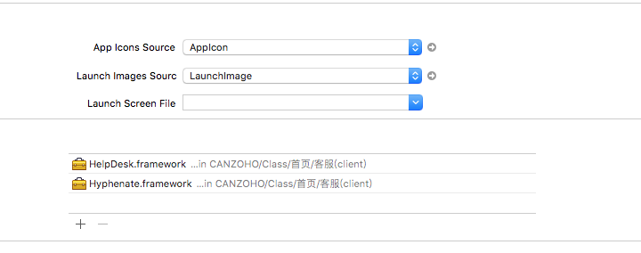
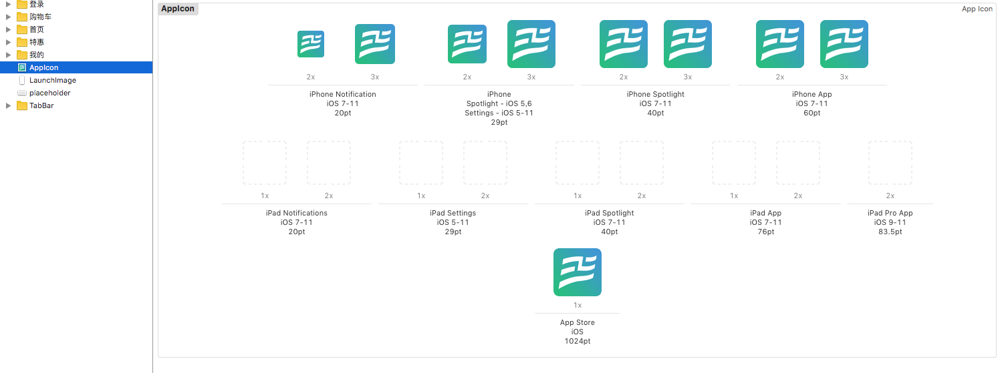
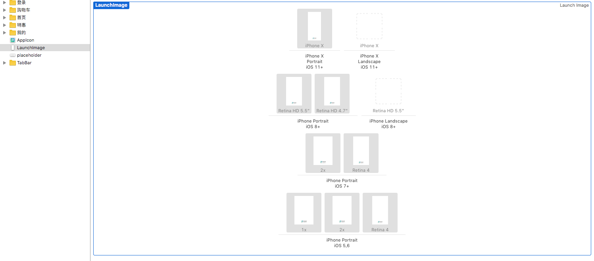
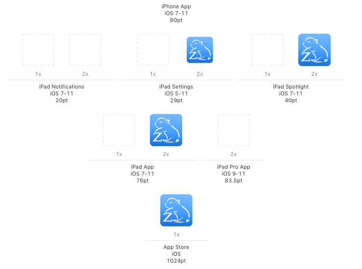
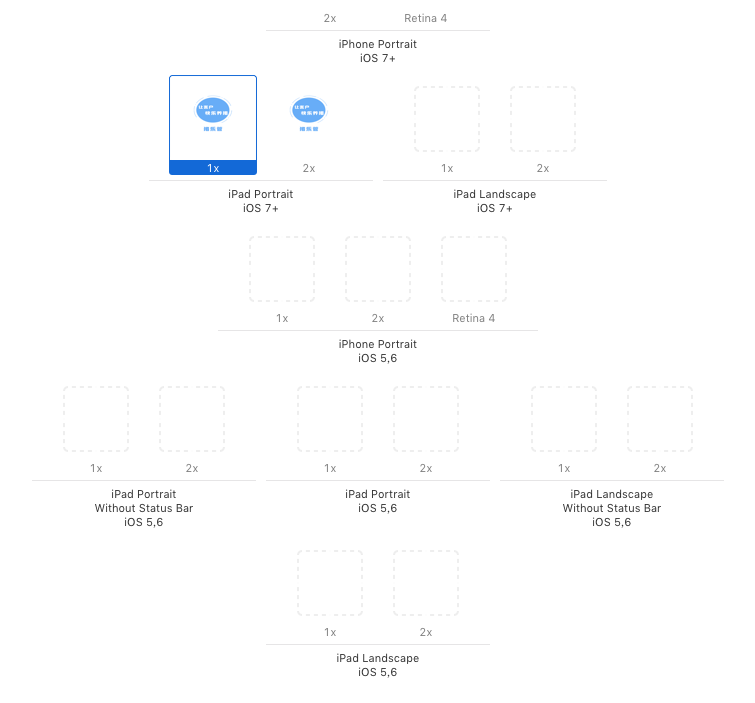

iOS中AppIcon与LaunchImage设置与相关尺寸
2018年的第一个项目快要接近尾声，项目之余在学习.net， vue等,后面打算写一系列全栈之路的文章来记录自己的学习过程， 今天先来记录一下iOS启动页中的AppIcon与LaunchImage的设置与尺寸，之所以记录这个，并不是因为这个东西难，只是为了 后面做开发的时候不必要继续去百度一些尺寸啥的，这次的相关尺寸基于Xcode9.3；
一、 AppIcon的设置
首先点击项目根目录，来到如下图位置，
接着，将App Icons Source设置为AppIcon：
点击邮编的右箭头,来到下图位置：
如图：AppIcon分为4部分：Notification(来通知时显示), Spotlight(下拉搜索的时候显示)，App(App的Logo), App Store(在应用商店中显示)
对应的尺寸分别为:40*40, 60*60; 58*58, 87*87; 80*80, 120*120; 120*120, 180*180; 1024*1024;
其中在Xcode9.3之后， 必须有的尺寸为120*120， 180*180， 1024*1024；
二、 LaunchImage的设置
首先点击项目根目录，来到如下图位置，
接着，删除掉Launch Screen File中的LauchScreen.storyboard， 点击Launch Image Source， 增加一个LaunchImage；
点击邮编的右箭头,来到下图位置：
如图，Iphone Portrait App启动页要求项分别为 :
iPhoneX : 1125*2436;
iOS8+ : Retina HD 5.5: 1242*2208, Retina HD 4.7: 750*1334,
iOS7+ : 2x: 640*960, Retina 4: 640*1136,
iOS5,6 : 1x: 320*480, 2x: 640*960, Retina 4: 640*1136,
综上，Xcode9.3后iPhone Portrait需要的尺寸为：1125*2436， 1242*2208， 750*1334， 640*960， 640*1136， 320*480
另外，如果支持ipad平台：
AppIcon:152*152必须有 58*58等可选
App LaunchImage:640*1136 1536*2048必须有
